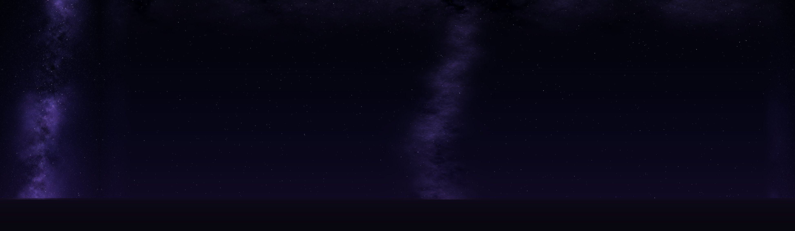

바꾸는 것은 네 가지뿐입니다 — 2-1 360° 하늘(사진까지 함께 도는 한 장) · 2-2 별 · 달 · 기념일 고리 · 유성의 모양과 움직임 · 2-3 방위 → 네 방향 이름 · 2-4 시각 표기. C01 머리 · ✕ · 라벨 · 지평선 · D+ · C03 전체 화면 · 설정 OUR SKY · 버튼은 patch9b(현재 앱) 그대로입니다. 별의 뜻(별 = 기록이 있는 날 · 크기 = 그 달 안 온도 순위 3단계 · 달 = 발행된 호 · 읽기 전용)은 바꾸지 않았습니다.
assets/fonts/. 하늘 원본은 docs/design/nocturne/sky/sky_pano_360.jpg — 이 보드도 그것을 읽습니다.| # | patch9b | patch10 |
|---|---|---|
| 2-1 하늘 | 사진 층 고정 · 별 · 달 · 방위만 회전 | 사진 · 별 · 달 · 지평선이 한 장으로 함께 돎. 360° 원본은 원통 띠(가로 360° · 세로 지평선 −15° ~ 천정). 들어가는 방향의 45°는 C01 그림 그대로라 들어가고 나올 때 화면이 바뀌지 않음. 위아래 기울기는 거의 잠금(아래로 10°까지만 — 첫 화면이 이미 지평선부터 천정까지 다 보임). 그래서 "비스듬히 움직이는 별"이 생기지 않음 |
| 2-2 별 | 흰 점 + 보랏빛 후광 3크기 · 투명도 깜빡임 | 크기 3단계 = 빛의 모양 3단계(점 → 짧은 빛살 → 긴 빛살 + 따뜻한 후광). 깜빡임 대신 빛살이 숨 쉼(중심은 늘 켜져 있음 — 기록은 꺼지지 않음). 하늘을 처음 열 때 날짜 순서대로 하나씩 켜짐 |
| 2-3 방위 | 북 · 북동 … 눈금 | 처음 만난 쪽 · 함께 웃던 쪽 · 나란히 걷던 쪽 · 서로 기다리던 쪽. 바라보는 쪽 이름 하나만 지평선 아래에. 눈금 없음. "처음 만난 쪽" = 둘러보기에 들어갈 때 바라본 방향(실제 방위와 무관) |
| 2-3 칩 | "이번 달 별 ›" → 그쪽으로 회전 | 유지. 이제 칩이 가리키는 곳은 늘 "처음 만난 쪽"이라 어긋남이 없음. 화살표는 짧은 쪽(‹ 또는 ›) |
| 2-4 시각 | 앱 "21:30" | "밤 9시 30분" — 아래 표 |
sky/sky_pano_360.jpg(3896×1136px · 1.25x · 271KB)은 tools/make_sky_pano.py로 만들었습니다 — 재료는 앱의 sky_world.jpg와 계산뿐(외부 · 실존 장소 사진 0). 은하수는 하나의 큰 원이라 "처음 만난 쪽"에서 솟아 천정을 넘어 "나란히 걷던 쪽"으로 내려갑니다. 가로 끝과 끝은 이어집니다.
| 층 | 둘러볼 때 | 비고 |
|---|---|---|
| 하늘 한 장 | 원본 그림 · 데이트 별 · 달 · 라벨 · 지평선 실루엣이 같은 좌표로 함께 가로 이동 | 좌표: 방향 θ° → x = θ × 8.656pt, 높이 e° → y = (90 − e) × 8.656pt. 별 자리는 C01과 같은 화면 좌표(들어가는 창 안) |
| 지평선 실루엣 | 둘레 3116.8pt의 이어지는 길(SVG path). 0~45° 구간은 C01 실루엣과 같은 모양, 나머지는 낮은 언덕 | 바라보는 쪽 이름이 그 아래에 |
| 머리 · ✕ · "이번 달 별" 칩 | 화면에 고정 | — |
| 숨 쉬는 배경 별 20개 | 하늘 한 장에 붙어 함께 이동(화면 고정 아님) | 원본 그림의 별은 정지, 이 20개만 CSS로 |
<img> 두 장으로 이어 붙인 띠를 transform: translate3d로만 옮깁니다(배경 위치 애니메이션 금지 — 다시 그리기가 생김). 별 · 라벨 · 실루엣도 같은 띠 안의 자식이라 한 번에 합성됩니다. 띠 왼쪽 끝이 화면을 넘으면 x를 둘레만큼 되돌립니다(x mod 3116.8). 원본 디코딩 메모리 약 17.7MB.| 표기 | 값 |
|---|---|
| 자리 | 지평선 아래 가운데 한 줄(y 792) — D+와 "위로 끌면" 안내가 있던 자리. 이름 하나만 보입니다 |
| 모양 | 12.5px · 500 · lilacText. 아래에 네 개의 작은 점(현재 쪽만 lilac, 나머지 .3) — 눈금 · 글자 방위 없음 |
| 바뀌는 때 | 바라보는 방향이 각 이름의 가운데에서 ±45°를 넘을 때. 경계에서 깜빡이지 않게 5° 여유(되돌아올 때는 40°에서) |
| 바뀌는 연출 | 앞 이름 투명 1→0 · 새 이름 0→1, 함께 240ms, 6pt 가로로 밀림(도는 방향으로) |
| 요소 | 모양 |
|---|---|
| 별 · 아래(1단계 4) | 중심 3px #FFFDF8 · 후광 r 7 lilac .35 · 빛살 없음 |
| 별 · 가운데(5) | 중심 4px · 후광 r 10 lilac .45 · 십자 빛살 길이 14(두께 1 · 끝으로 사라짐) |
| 별 · 위(8) | 중심 6px · 후광 r 17 lilac → rose .55 · 십자 빛살 30 + 대각 빛살 12(.5) |
| 지난달 별 | 같은 모양, 전체 .55(1단계 그대로) |
| 기념일 고리 | 별을 둘러싼 r 14(위 단계는 r 18) 점선 원 · rose .6 · 점선 2/4 |
| 달 | 초승달 moon · 어두운 쪽 원 .12(지구빛) · 후광 r 22 .10↔.18 |
| 유성 | 머리 흰 점 r 2.6 + rose 후광 r 9 · 꼬리 길이 96 쐐기(머리 쪽 두께 2.2 → 0) 흰색 .95 → 0 · 흘리는 빛 4개 r .9 |
| 구간 | 앞말 | 예 |
|---|---|---|
| 00:00 – 02:59 | 밤 | 00:00 → 밤 12시 · 00:30 → 밤 12시 30분 · 02:05 → 밤 2시 5분 |
| 03:00 – 05:59 | 새벽 | 04:20 → 새벽 4시 20분 |
| 06:00 – 10:59 | 아침 | 07:00 → 아침 7시 |
| 11:00 – 16:59 | 낮 | 12:30 → 낮 12시 30분 · 13:10 → 낮 1시 10분 |
| 17:00 – 20:59 | 저녁 | 19:40 → 저녁 7시 40분 |
| 21:00 – 23:59 | 밤 | 21:30 → 밤 9시 30분 · 23:12 → 밤 11시 12분 |
14:20)은 바꾸지 않습니다.| 요소 | 기본 | 곡선 | 비고 |
|---|---|---|---|
| 하늘 한 장 (2-1) — patch9b "층 분리" 줄을 대체 | |||
| 둘러보기 회전 | 원본 · 별 · 달 · 라벨 · 실루엣을 한 띠로 가로 이동. 1° = 8.656pt | — | 세로는 아래 10°(87pt)까지만. 기울기(roll)는 쓰지 않음 |
| 센서 → 회전 | 바라보는 방향(yaw)만, 가장 짧은 각으로 평활 α 0.2 | — | 85-b 계산 위에 그대로 |
| C01 → C08 | 칩 · D+ · 안내 페이드아웃 180ms → 이름 · 점 페이드인 240ms(아래에서 6pt) | ease-out | 하늘은 움직이지 않음(같은 그림) |
| C08 → C01 | 지금 방향에서 "처음 만난 쪽"으로 짧은 쪽 회전 500ms → 이름 페이드아웃 180ms → C01 요소 페이드인 | cubic-bezier(.2,.8,.2,1) | 나올 때도 튀지 않게 먼저 제자리로 |
| "이번 달 별" 칩 | 짧은 쪽으로 800ms 회전 | cubic-bezier(.2,.8,.2,1) | patch9b 600ms → 800ms(하늘이 함께 돌아 거리가 길어짐) |
| 이름 바뀜 | 교차 페이드 240ms + 6pt 밀림 | ease-out | ±45° · 5° 여유 |
| 별 · 달 · 고리 (2-2) | |||
| 별 켜짐(하늘을 그날 처음 열 때) | 날짜 순서대로 별마다 45ms 간격 · 후광 크기 .4→1 · 투명 0→1 · 700ms | cubic-bezier(.16,1,.3,1) | 31개면 약 2.1초. 같은 날 다시 열면 없음 |
| 별 숨 | 빛살 · 후광 크기 .78↔1 · 투명 .7↔1, 별마다 2.8–5.2초(1단계 주기 그대로) | ease-in-out | 중심 점은 움직이지 않음. 숨 쉬는 별은 가운데 · 위 단계만(최대 31 중 약 20) |
| 기념일 고리 | 60초에 한 바퀴 | linear | — |
| 달 후광 | 투명 .10↔.18, 8초 | ease-in-out | — |
| 배경 별 숨 | patch9b 그대로(.35↔.75 · 9–12초 · 20개) | ease-in-out | 하늘 한 장에 붙음 |
| 반짝임 끔(설정) | 별 숨 · 배경 별 숨 · 고리 회전 · 달 후광이 멈춤 — 별 켜짐 · 유성은 그대로 | — | patch9b 범위에 고리 · 달 후광을 더함 |
| 유성 (2-2) — patch9b 빈도 · 누를 시간 3초 그대로 | |||
| 유성 지나감 | 머리 2.4초 · 꼬리 0→96pt 처음 0.35초 · 빛 4개를 0.5초마다 흘림(각 600ms에 사라짐) | 머리 cubic-bezier(.3,0,.7,1) | 방향 · 색 patch9b 그대로 |
| 사라지기 | 머리 후광 1→1.6배 150ms 뒤 전체 투명 1→0 450ms, 꼬리는 머리 쪽으로 줄어듦 | ease-in | 합 0.6초(patch9b와 같음) |